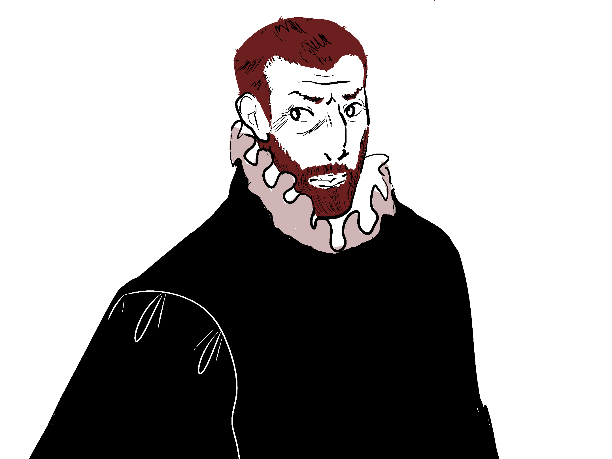

Intro

Welkom op mijn verhaal, ik ben Christophe Plantin. Misschien ken je mij als een van de meest invloedrijke drukkers uit de geschiedenis. Maar mijn reis naar succes was allesbehalve eenvoudig. Laat me je meenemen naar drie momenten waarop ik aan de rand van de afgrond stond, bijna alles verloor, en toch wist door te zetten. De eerste keer: Risicovolle investeringen